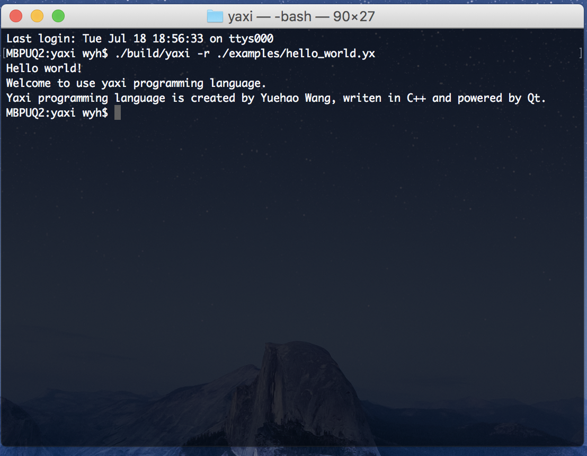

遇见yaxi
获取yaxi
获取yaxi可以采用以下的方式：
自行编译源代码
首先，从Github上把项目clone到本地：
$ git clone https://github.com/yuehaowang/yaxi-lang
$ cd ./yaxi-lang
由于yaxi是基于Qt的，所以你需要下载和安装Qt。下载和安装完成后，就可以编译运行程序了。（据测试，Qt 4.8.6以及4.8.6之后的版本都能成功编译yaxi源代码。 ）
另一限制在于，由于在开发过程中使用了少量C++ 11的特性，所以在不支持C++ 11的编译器上编译，可能会碰到麻烦。将源代码稍作调整，即可编译通过。以下是调整方案：
1. interpreter.h文件中
找到如下这一行代码：
constexpr static float DEFAULT_VAL_FLOAT = 0.0;
改为：
const static float DEFAULT_VAL_FLOAT = 0.0;
修改好之后，就可以进行源代码的编译了。
CLI的使用
Yaxi提供了命令行程序界面，以下是使用说明：
--version -v： 显示版本号。--run -r [file path]： 运行[file path]对应的脚本文件。--help -h： 显示帮助列表。
编写代码
Yaxi仅支持纯文本格式的脚本文件。换句话说，不能使用Microsoft Word以及Pages等软件进行代码编辑，因为用这些软件保存下来的文件都不是纯文本文件。纯文本代码编辑器主要推荐以下几款，大家可以根据偏好进行选择：
- Notepad++（仅支持Windows系统）
- Sublime Text（收费）
- Atom
- Visual Studio Code
当然直接用系统自带的文本编辑器也是可行的。
小试牛刀
现在，让我们来编写第一个yaxi程序 —— Hello World，首先创建一个文本文件，命名为hello_world.yx（yaxi脚本文件以".yx"作为后缀名），用文本编辑器打开创建好的文件并加入以下代码：
@print("Hello world!", "Welcome to use yaxi programming language.")
@print('Yaxi programming language is created by Yuehao Wang,' + " writen in C++ and powered by Qt.")
代码看不懂不要紧，现在主要是测试一下环境是否设置成功。
接下来，找到执行文件yaxi的位置，使用如下命令运行hello_world.yx：
$ path/to/yaxi -r hello_world.yx
运行后，如果在终端中看到了类似于下图所示的结果，说明yaxi已经可以使用了：

更多示例可以在https://github.com/yuehaowang/yaxi-lang/tree/master/examples中查看。